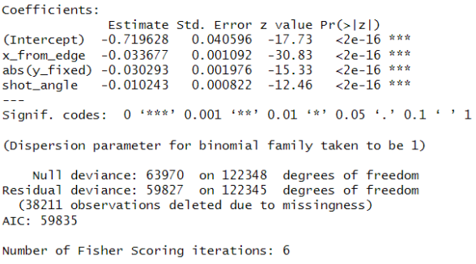
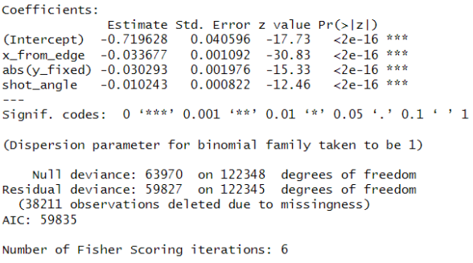

NHL Hockey Shot Report
Timeframe: March 2024 - May 2024
Technology Used: R (ggplot2)
Link:
pdfThis was a group term project I worked on for the course 36-315 - Statistical Graphics and Visualization at Carnegie Mellon University in the Spring 2024 semester. In this project, we analyzed data about shots made by players in the NHL to answer a series of research questions. I was responsible for answering the question of where on the ice do players tend to make more shots and goals. Through visualizing spatial data with heatmaps and using logistic regression to predict goals based on shot location and angle, we inferred that goals are made more when a player is closer to the net and makes a straighter shot.
I would like to give my greatest thanks to my group members Melos Bekaj, Lay Len Ching, and Silas Wang for their contributions to their own questions and the write-up.

 
